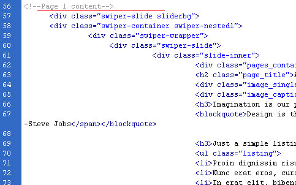
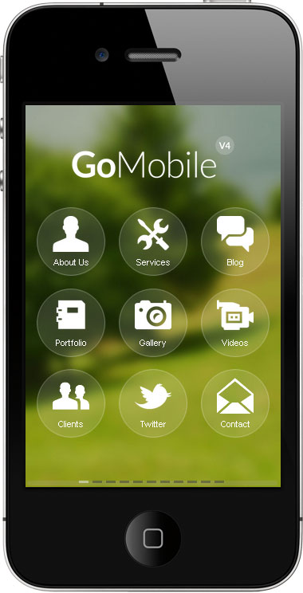
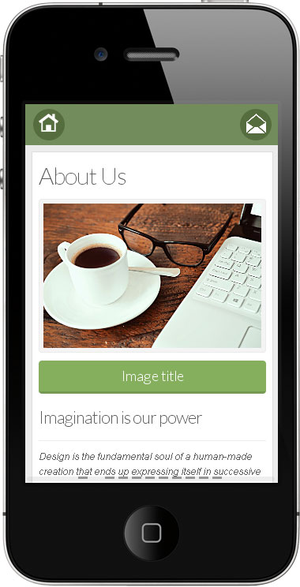
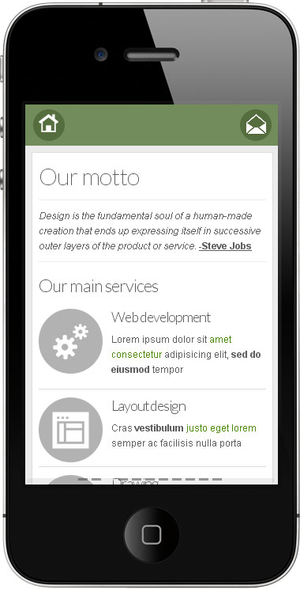
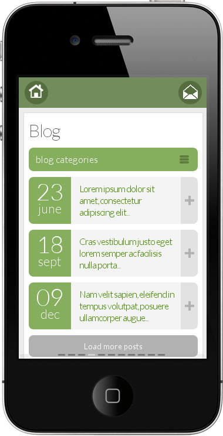
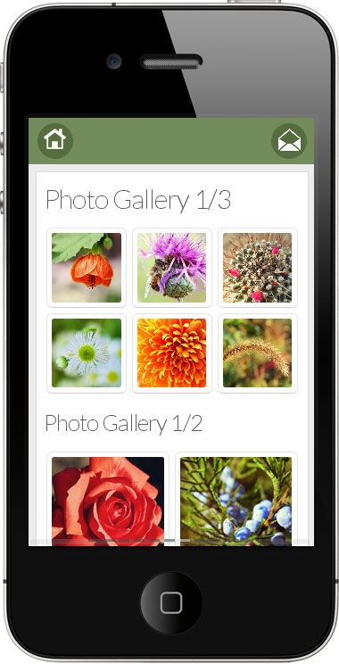
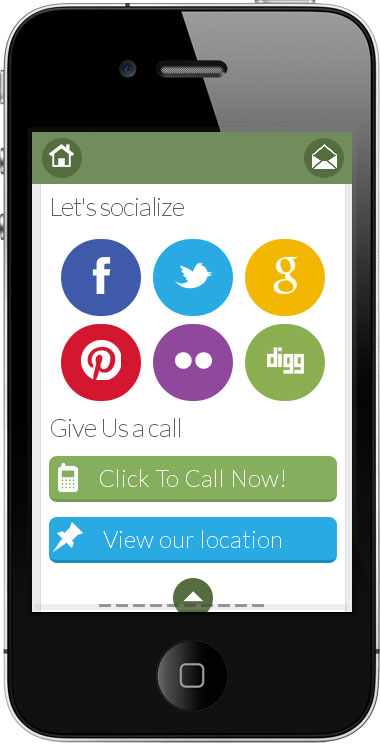
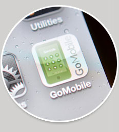

Go Mobile V4 Web App Template Documentation
By: Famous Themes
Table of Contents
- Introduction
- Using a mobile detection code on your desktop website version (to redirect to this mobile version)
- Theme HTML Structure
- CSS Files and Structure
- JavaScript
- Sources and Credits
1) Introduction
Go Mobile is our 4'th mobile theme after V1, V2 and V3. This V4 is the first one from our mobile themes that is actually a web app. All content is inside one file that will make the theme behave like an app when browsing through pages. You can navigate using the menu icons or just by sliding from one page to another. This new version comes with a better design concept, a new functionality, improved code and some amazing features. More easy to customize and to create a new design style to suit your needs. It allready comes with 10 diferent styles included.
2) Using a mobile detection code on your desktop website version (to redirect to this mobile version)
A lot of users asked us how they can detect users coming from a mobile device and redirect them to the mobile version of their website.
Well, there are more solutions for that. But I will give some examples I am using:
Jut go HERE and choose the solution that suits your needs, depending on the way your main desktop website is buit.
3) Theme HTML Structure - top
The template is using a responsive design starting from 800px and down.
All theme content is added in one index main file. We have provided more custom designs, and more index pages. As you can see in your archive, we have 10 index HTML pages and one index php page. The index.php page is the page that contains a working php contact form. This beeing the only diference. On section 3.D is described how to use that page.
Each index HTML page loads a diferent design, and the file is named by the design it's using, like "beauty" style design is index_beauty.html
All custom design files are in the folder called "colors". For each design we have a custom CSS style and a folder with images. For example index.html the main green default design is using the folder green, with green.css style and the images folder next to it.
In the HTML code you can see how index.html is loading the specifid style:
<link type="text/css" rel="stylesheet" href="colors/green/green.css"/>
Also how it using some images from green style folder:
<img src="colors/green/images/logo.png" alt="" title="" border="0" />
Other than the custom design styles, all files are loading a general CSS file style.css from the CSS folder.
<link type="text/css" rel="stylesheet" href="css/style.css"/>
Each HTML index page starts in code with the HEADER
<div id="header">
<div class="gohome radius20"><a href="#"><img src="images/icons/home.png" alt="" title="" /></a></div>
<div class="gomenu radius20"><a href="#" onclick="swiperParent.swipeTo(10);"><img src="images/icons/contact.png" alt="" title="" /></a></div>
</div>
The header will only be available for the secondary pages. All pages will use the same header.
The header si positionated right at the top section of the theme, and it's hidden when the menu section is visible. The general style of the header is found in the general style.css file.
#header{ position:absolute; top:-100px; left:0px; z-index:9999; width:94%; height:40px;padding:6px 3%;}
To customize the header color and style, use the custom CSS file under each color folder.
For example in green.css file we have the header with:
#header{ background-color:#738c5b; color:#FFFFFF;}
After the header layout comes the page sections of the themes. Each section is one slide. In the HTML code we have delimited the sections by some commented text like <!--Menu page--> <!--Page 1 content--> and so on.

We will describe below how to add/edit this section starting with the menu section.
3.A Creating a menu section - top
The first section under the header is the menu. This will be the slide that will first be visible when your theme loads.
On each design we have diferent menus styles.
The HTML structure for the menu is almost the same for all designs:
<div class="menu">
<ul>
<li><a href="#" onclick="swiperParent.swipeTo(1);"><img src="images/icons/about.png" alt="" title="" /><span>About Us</span></a></li>
<li><a href="#" onclick="swiperParent.swipeTo(2);"><img src="images/icons/tools.png" alt="" title="" /><span>Services</span></a></li>
<li><a href="#" onclick="swiperParent.swipeTo(3);"><img src="images/icons/blog.png" alt="" title="" /><span>Blog</span></a></li>
<li><a href="#" onclick="swiperParent.swipeTo(5);"><img src="images/icons/docs.png" alt="" title="" /><span>Portfolio</span></a></li>
<li><a href="#" onclick="swiperParent.swipeTo(6);"><img src="images/icons/photos.png" alt="" title="" /><span>Gallery</span></a></li>
<li><a href="#" onclick="swiperParent.swipeTo(7);"><img src="images/icons/videos.png" alt="" title="" /><span>Videos</span></a></li>
<li><a href="#" onclick="swiperParent.swipeTo(8);"><img src="images/icons/clients.png" alt="" title="" /><span>Clients</span></a></li>
<li><a href="#" onclick="swiperParent.swipeTo(9);"><img src="images/icons/twitter.png" alt="" title="" /><span>Twitter</span></a></li>
<li><a href="#" onclick="swiperParent.swipeTo(10);"><img src="images/icons/contact.png" alt="" title="" /><span>Contact</span></a></li>
</ul>
<div class="clearfix"></div>
</div>
We have one image followed by a SPAN text wich is the menu item text.
The action for the menu link is added by onclick="swiperParent.swipeTo(1);" function, and not a href=""
The icons we are using comes in white and black png images. Both are found under the main images folder of the theme. You can use them on white or black depending on the style you want. You can allwasy use your own icons if you want, but keep the most important thing in mind, to use them at the same size as this ones, not to modify the visual design.
The corect size for an icon to be used in the mene is 114px width and 114px height.

All the CSS style for the menu is found under each design folder, in the custom CSS file.
For example the menu from the green design is found in green.css file
/* Menu style
/*------------------------------------------*/
.menu{ width:100%; padding:0px;margin:0px 0 50px 0;}
.menu ul{ list-style:none; padding:0px; margin:0px; width:100%;}
.menu ul li{ list-style:none; margin:1% 0 2% 4%; padding:5.5% 0; width:28%;height:auto; float:left; display:block; text-align:center;
background-image: url(images/transparent_circle.png);
background-repeat: no-repeat;
background-position: center center;
background-size: cover;
-webkit-background-size: cover;
-moz-background-size: cover;
-o-background-size: cover;
}
.menu ul li a{ color:#FFFFFF; text-decoration:none; text-align: center;}
.menu ul li a span{ display:block; text-align:center; font-size:11px; line-height:15px;}
.menu ul li img{ display:inline-block;max-width:50%;}
This menu style is using as you can see a background image as icons bg. It's a png transparent circle.
The metro style theme for another example is using a diferent menu style:
/* Menu style
/*------------------------------------------*/
.menu{ width:100%; padding:0px; margin:0px 0 50px 0;}
.menu ul{ list-style:none; padding:0px; margin:0px; width:100%;}
.menu ul li{ list-style:none; margin:3% 0 0 3%; padding:5.5% 0; width:45.5%;height:auto; float:left; display:block; text-align:center;}
.menu ul li a{ color:#FFFFFF; text-decoration:none; text-align: center;}
.menu ul li a span{ display:block; text-align:center; font-size:14px; line-height:25px;}
.menu ul li img{ display:inline-block;max-width:50%;}
And so on, each design will use his own style.
Remember that you can use any of this style in any theme. Just copy/replace the Menu style code from one style to another. Also the images containing, if they use some.

Beeing a responsive design remember that some menus styles requires some CSS media queries. This Media Queries code is located at the bottom of each CSS file.
For example the green.css file use for the menu
/* CSS Media Queries
/*-----------------------------------------------------------------------------------*/
@media screen and (max-width: 480px) {
.menu ul li{ padding:5% 0%;width:28.5%;margin:1% 0 2% 3.5%;}
}
@media screen and (max-width: 360px) {
.menu ul li{ padding:4.6% 0.3%;width:28.5%;margin:1% 0 2% 3.2%;}
}
@media screen and (max-width: 320px) {
.menu ul li{ padding:4.1% 0.1%;width:28.5%;margin:1% 0 2% 3.5%;}
}
3.B Creating and editing pages sections - top
After the menu slide comes the pages slides. Like we first mentioned each page is a new slide.

The corect structure of a slide/page is the following:
<!--Page 1 content-->
<div class="swiper-slide sliderbg">
<div class="swiper-container swiper-nested1">
<div class="swiper-wrapper">
<div class="swiper-slide">
<div class="slide-inner">
<div class="pages_container">
....................your content.....................
<div class="scrolltop radius20"><a href="#" class="scrolltop1"><img src="images/icons/top.png" alt="Go on top" title="Go on top" /></a></div>
</div>
<!--End of page container-->
</div>
</div>
</div>
<div class="swiper-scrollbar1"></div>
</div>
</div>
VERY IMPORTANT WHEN TRYING TO CREATE A NEW PAGE IS TO ADD THE CORECT ID TO THE HTML ELEMENTS
1. The first ID is inside div class="swiper-container swiper-nested1"right next tonested1, and the ID as you can see it's 1.
2. The second place to add this unique ID is on the scroll top section (only if you want to have a scroll top button on each page), and it's inside class="scrolltop1", the same 1 ID
3. The last ID if for the scroll function and can be found in div class="swiper-scrollbar1".
Is very important when creating a new page section to add a unque ID to it.
The javascript code added for each page slide is important when creatiing a new page.
The code that built this function is found in js folder. And the file is called code.js
For each new slide created you will need to add another function like
var swiperNested1 = new Swiper('.swiper-nested1', {
scrollContainer:true,
mousewheelControl : true,
mode:'vertical',
//Enable Scrollbar
scrollbar: {
container :'.swiper-scrollbar1',
hide: true,
draggable: false
}
})
$('.scrolltop1').click(function(){
swiperNested1.swipeTo(0);
});
So let's say you will create a new page with the ID 9. In the HTML code you will have
<!--Page 9 content-->
<div class="swiper-slide sliderbg">
<div class="swiper-container swiper-nested9">
<div class="swiper-wrapper">
<div class="swiper-slide">
<div class="slide-inner">
<div class="pages_container">
....................your content.....................
<div class="scrolltop radius20"><a href="#" class="scrolltop9"><img src="images/icons/top.png" alt="Go on top" title="Go on top" /></a></div>
</div>
<!--End of page container-->
</div>
</div>
</div>
<div class="swiper-scrollbar9"></div>
</div>
</div>
And in js code you will add
var swiperNested9 = new Swiper('.swiper-nested9', {
scrollContainer:true,
mousewheelControl : true,
mode:'vertical',
//Enable Scrollbar
scrollbar: {
container :'.swiper-scrollbar9',
hide: true,
draggable: false
}
})
$('.scrolltop9').click(function(){
swiperNested9.swipeTo(0);
});
And to have a menu icon that will link to this section you will add
<li><a href="#" onclick="swiperParent.swipeTo(9);"><img src="images/icons/twitter.png" alt="" title="" /><span>Twitter</span></a></li>
A cool feature we have added to the blog section is the one that "Load more posts" when clicking.
We just want to remember if you want to change the nr of posts first to show you will need to see the js file called load.js

The function looks like
$(document).ready(function () {
containerHeight = $('.blogheight').height();
$(".blogheight").css({height: containerHeight})
$(".posts li").hide();
size_li = $(".posts li").size();
x=3;
$('.posts li:lt('+x+')').show();
$('#loadMore').click(function () {
x= (x+1 <= size_li) ? x+1 : size_li;
$('.posts li:lt('+x+')').show();
if(x == size_li){
$('#loadMore').hide();
$('#showLess').show();
}
});
});
The nr of posts to show can be changed from x=3;
The secondary pages contains a lot of design elements that you can use, like single responsive images, toggles, tabs, buttons..etc
When editing this elements the most important thing is not to leave an unclose DIV or delete one that is important to the structure of the theme.
Also when building buttons try to follow the CSS code to see what posibilities you have.
For example a button can be created with round corners or square, and on a diferent color.
<a href="#" class="button_12 green green_borderbottom radius4">Button 1/2</a>
In the main style.css file we have some predefined colors that you use
.green{ background-color:#85af5d;}
.blue{ background-color:#29aae3;}
.darkblue{ background-color:#035792;}
.red{ background-color:#c53238;}
.purple{ background-color:#8b2767;}
.pink{ background-color:#f87c68;}
.orange{ background-color:#f17225;}
.black{ background-color:#272625;}
.gray{ background-color:#6e6e6e;}
.yellow{ background-color:#ffb606;}
.bluegreen{ background-color:#06a78b;}
.green_borderbottom{border-bottom:3px #759a51 solid;}
.blue_borderbottom{border-bottom:3px #198bbd solid;}
.red_borderbottom{border-bottom:3px #8e262c solid;}
.purple_borderbottom{border-bottom:3px #671a4b solid;}
.pink_borderbottom{border-bottom:3px #d36755 solid;}
.orange_borderbottom{border-bottom:3px #c55512 solid;}
.black_borderbottom{border-bottom:3px #000000 solid;}
.gray_borderbottom{border-bottom:3px #535150 solid;}
.yellow_borderbottom{border-bottom:3px #e3a000 solid;}
.bluegreen_borderbottom{border-bottom:3px #058770 solid;}
.darkblue_borderbottom{border-bottom:3px #003a62 solid;}
And also some predefined corner radius
/* Border radius
/*------------------------------------------*/
.radius4{-webkit-border-radius:4px;-moz-border-radius:4px;border-radius:4px;}
.radius6{-webkit-border-radius:6px;-moz-border-radius:6px;border-radius:6px;}
.radius8{-webkit-border-radius:8px;-moz-border-radius:8px;border-radius:8px;}
.radius20{-webkit-border-radius:20px;-moz-border-radius:20px;border-radius:20px;}
3.C Gallery page - top
The gallery page is using the swipebox script.
You can add your gallery photos on full width, 1/2 and 1/3 sections

The HTML structure looks like:
<ul class="photo_gallery_13">
<li><a rel="gallery-3" href="images/photos/photo1.jpg" title="Photo title" class="swipebox"><img src="images/photos/photo1.jpg" alt="image"/></a></li>
<li><a rel="gallery-3" href="images/photos/photo2.jpg" title="Photo title" class="swipebox"><img src="images/photos/photo2.jpg" alt="image"/></a></li>
<li><a rel="gallery-3" href="images/photos/photo3.jpg" title="Photo title" class="swipebox"><img src="images/photos/photo3.jpg" alt="image"/></a></li>
<li><a rel="gallery-3" href="images/photos/photo4.jpg" title="Photo title" class="swipebox"><img src="images/photos/photo4.jpg" alt="image"/></a></li>
<li><a rel="gallery-3" href="images/photos/photo5.jpg" title="Photo title" class="swipebox"><img src="images/photos/photo5.jpg" alt="image"/></a></li>
<li><a rel="gallery-3" href="images/photos/photo6.jpg" title="Photo title" class="swipebox"><img src="images/photos/photo6.jpg" alt="image"/></a></li>
</ul>
<h2>Photo Gallery 1/2</h2>
<ul class="photo_gallery_12">
<li><a rel="gallery-4" href="images/photos/photo7.jpg" title="Photo title" class="swipebox"><img src="images/photos/photo7.jpg" alt="image"/></a></li>
<li><a rel="gallery-4" href="images/photos/photo8.jpg" title="Photo title" class="swipebox"><img src="images/photos/photo8.jpg" alt="image"/></a></li>
<li><a rel="gallery-4" href="images/photos/photo9.jpg" title="Photo title" class="swipebox"><img src="images/photos/photo9.jpg" alt="image"/></a></li>
<li><a rel="gallery-4" href="images/photos/photo10.jpg" title="Photo title" class="swipebox"><img src="images/photos/photo10.jpg" alt="image"/></a></li>
</ul>
<h2>Photo Gallery 1/1</h2>
<ul class="photo_gallery_11">
<li><a rel="gallery-5" href="images/photos/photo11.jpg" title="Photo title" class="swipebox"><img src="images/photos/photo11.jpg" alt="image"/></a></li>
</ul>
So using UL class with photo_gallery_13 is for 1/3 section, photo_gallery_12 for 1/2 and photo_gallery_11 for full width
The thumbs will automatically be resized from the main image, you don't need to use 2 images size. Just the big one, and try to use it at a bigger size than 640 in width. Your must look great also on retina display.
3.D Contact page - top
We have provided in the archive an index.php file. Basically this index.php is a copy of the index.html file with a working php form.
Other than the contact form, you can see on the page section some social icons you can use, and 2 buttons for a map location and phone call.
To actually call a phone number when the call button is pressed, just add a corect phone number under a href="tel:... Just like below.
<a href="tel:123 456 789" class="call_button radius8">Click To Call Now!</a>
And to link to a map use the button as:
<a href="http://maps.google.com/maps?q=houston+usa&hl=en&sll=37.0625,-95.677068&sspn=53.961216,114.169922&hnear=Houston,+Harris,+Texas&t=m&z=5" class="map_button radius8">View our location</a>

To make the contact form working we have added to the index.php file :
1. The php code right above the first HTML lines of code from the file:
<?php
error_reporting(E_ALL ^ E_NOTICE); // hide all basic notices from PHP
//If the form is submitted
if(isset($_POST['submitted'])) {
// require a name from user
if(trim($_POST['contactName']) === '') {
$nameError = 'Forgot your name!';
$hasError = true;
} else {
$name = trim($_POST['contactName']);
}
// need valid email
if(trim($_POST['email']) === '') {
$emailError = 'Forgot to enter in your e-mail address.';
$hasError = true;
} else if (!preg_match("/^[[:alnum:]][a-z0-9_.-]*@[a-z0-9.-]+\.[a-z]{2,4}$/i", trim($_POST['email']))) {
$emailError = 'You entered an invalid email address.';
$hasError = true;
} else {
$email = trim($_POST['email']);
}
// we need at least some content
if(trim($_POST['comments']) === '') {
$commentError = 'You forgot to enter a message!';
$hasError = true;
} else {
if(function_exists('stripslashes')) {
$comments = stripslashes(trim($_POST['comments']));
} else {
$comments = trim($_POST['comments']);
}
}
// upon no failure errors let's email now!
if(!isset($hasError)) {
$emailTo = 'youremail@website.com';
$subject = 'Submitted message from '.$name;
$sendCopy = trim($_POST['sendCopy']);
$body = "Name: $name \n\nEmail: $email \n\nComments: $comments";
$headers = 'From: ' .' <'.$emailTo.'>' . "\r\n" . 'Reply-To: ' . $email;
mail($emailTo, $subject, $body, $headers);
// set our boolean completion value to TRUE
$emailSent = true;
}
}
?>
2. The HTML form inside the contact section as following
<div class="form">
<form id="contact-us" action="index.php" method="post">
<label>Name:</label>
<input type="text" name="contactName" id="contactName" value="<?php if(isset($_POST['contactName'])) echo $_POST['contactName'];?>" class="form_input radius4 txt requiredField" />
<label>Email:</label>
<input type="text" name="email" id="email" value="<?php if(isset($_POST['email'])) echo $_POST['email'];?>" class="form_input radius4 txt requiredField email" />
<label>Message:</label>
<textarea rows="" cols="" name="comments" id="commentsText" class="form_textarea radius4 txtarea requiredField"><?php if(isset($_POST['comments'])) { if(function_exists('stripslashes')) { echo stripslashes($_POST['comments']); } else { echo $_POST['comments']; } } ?></textarea>
<input type="hidden" name="submitted" id="submitted" value="true" />
<input name="submit" type="submit" class="form_submit radius4 green green_borderbottom" value="Send" />
</form>
</div>
3. And the extra javascript file loaded at the bottom of the page
<script type="text/javascript" src="js/email.js"></script>
TO ADD YOUR EMAIL ADRESS TO THIS FORM JUST SEE THE PHP LINES AT THE TOP WHERE:
$emailTo = 'youremail@website.com';
And replace it with your email.
3 E Twitter page - top
We have provided a custom code that will show you latest tweets.
This can be see under the twitter section.
In HTML code we have:
<div class="pages_container">
<h2 class="page_title">Latest Tweets</h2>
<div class="tweet"></div>
<a href="#" class="button_11 blue">Follow Us!</a>
<div class="clearfix"></div>
<div class="scrolltop radius20"><a href="#" class="scrolltop8"><img src="images/icons/top.png" alt="Go on top" title="Go on top" /></a></div>
</div>
<!--End of page container-->
The most important thing is <div class="tweet"></div> There our content will be loaded.
TO CORECTLY USE THIS WIDGET YOU NEED TO:
1. Inside the js folder you will find the twitter folder. There the main files of the script are.
Opening index.php file right on the top lines you will see
// Your Twitter App Consumer Key
private $consumer_key = '';
// Your Twitter App Consumer Secret
private $consumer_secret = '';
// Your Twitter App Access Token
private $user_token = '';
// Your Twitter App Access Token Secret
private $user_secret = '';
You will need to complete all this keys numbers from your twitter developer account. If you don't have an account just make one using twitter developers page https://dev.twitter.com/
2. Load the js file at the bottom of index.html file
<!--Twitter Feed-->
<script type="text/javascript" src="js/twitter/jquery.tweet.js" charset="utf-8"></script>
This is allready loaded by default in each index file
3. Edit your username from the bottom javascript code, at the end of the page ...username: "famousthemes",
<script type="text/javascript" charset="utf-8">
var $ = jQuery.noConflict();
jQuery(function($){
$(".tweet").tweet({
modpath: 'js/twitter/',
join_text: "auto",
username: "famousthemes",
count: 5,
auto_join_text_default: "we said,",
auto_join_text_ed: "we",
auto_join_text_ing: "we were",
auto_join_text_reply: "we replied",
auto_join_text_url: "we were checking out",
loading_text: "loading tweets..."
});
});
</script>
3 D Launching the theme as an web app from your iphome home screen - top
This theme can be launched from your iphone home screen.
TO CORECTLY SETUP THIS FEATURE YOU NEED TO:
1. Load the theme using your Safari browser from iphone. Save the page and send it to your home screen using iphone option.

2. Once the page will be saved to your home screen you can edit the icon, and the screen that will apear when the theme is loading.
On each index HTML file right on the header lines you will see
<meta name="apple-mobile-web-app-capable" content="yes" />
<meta name="apple-mobile-web-app-status-bar-style" content="black" />
<link rel="apple-touch-icon" href="images/apple-touch-icon.png" />
<link rel="apple-touch-startup-image" href="images/apple-touch-startup-image-320x460.png" />
apple-touch-icon is the icon and apple-touch-startup-image is the background image.
Both are locaded inside the images folder.

3G - Using toggle with height content on pages - top
When using toggles elements inside pages and open the content of one toggle the page section height is bigger.
To make the scroll-effect we are using on each slide section read the new height we need to add some reinitialize javascript code to this page.
For example in our demo file we are using toggle element on About page and Portfolio (the top drop down categories). Also a blog toggle for the blog categories section.
In code.js file you can see how we are reinitialize the trigger toggle for About and Portfolio sections
$(".trigger").click(function(){
$(this).toggleClass("active").next().slideToggle( "slow", function() {
swiperNested1.reInit();
swiperNested4.reInit();
});
return false;
});
And for the blog section
$(".trigger_blog").click(function(){
$(this).toggleClass("activeb").next().slideToggle( "slow", function() {
swiperNested3.reInit();
});
return false;
});
If you have in plan using toggles on other pages just add the specific ID for each page here, just like swiperNested4.reInit(); just with your page ID instead of 4, in our example.
4) CSS Files and Structure - top
The template is using more CSS files
1. The general css file is style.css loaded in each index file
<link type="text/css" rel="stylesheet" href="css/style.css"/>
2. The color CSS file loaded for each color in each index file
<link type="text/css" rel="stylesheet" href="colors/green/green.css"/>
3. The slide-effect style and photo gallery style:
<link type="text/css" rel="stylesheet" href="css/idangerous.swiper.css"/>
<link type="text/css" rel="stylesheet" href="css/swipebox.css" />
4. The google web custom font
<link href='http://fonts.googleapis.com/css?family=Lato:300' rel='stylesheet' type='text/css' />
All headers are using a custom google web font. Each theme design with his own web font style.
To add/edit the custom font we have used you will need to load it, like we have mentioned above, right under the CSS files. And add the class name into the CSS like
/* Google web font
/*------------------------------------------*/
h1, h2, h3, h4, h5, h6, .logo, .image_caption, a.button_12, a.button_11, .trigger a, .trigger_blog a, .post_left, .post_right_unreveal, #loadMore, #showLess, a.backtoblog, .form label, .form_submit, a.call_button, a.map_button{font-family: 'Lato', sans-serif;}
This can be added on each color CSS file.
If you would like to edit other specific section of the site, simply find the appropriate label in the CSS file, and then scroll down until you find the appropriate style that needs to be edited.
5) JavaScript - top
All the javascript file are loaded at the end of each index file
<script type="text/javascript" src="js/jquery-1.10.1.min.js"></script>
<script type="text/javascript" src="js/jquery.swipebox.js"></script>
<script type="text/javascript" src="js/idangerous.swiper-2.1.min.js"></script>
<script type="text/javascript" src="js/idangerous.swiper.scrollbar-2.1.js"></script>
<script type="text/javascript" src="js/jquery.tabify.js"></script>
<script type="text/javascript" src="js/jquery.fitvids.js"></script>
<script type="text/javascript" src="js/code.js"></script>
<script type="text/javascript" src="js/load.js"></script>
<!--Twitter Feed-->
<script type="text/javascript" src="js/twitter/jquery.tweet.js" charset="utf-8"></script>
<script type="text/javascript" charset="utf-8">
var $ = jQuery.noConflict();
jQuery(function($){
$(".tweet").tweet({
modpath: 'js/twitter/',
join_text: "auto",
username: "famousthemes",
count: 5,
auto_join_text_default: "we said,",
auto_join_text_ed: "we",
auto_join_text_ing: "we were",
auto_join_text_reply: "we replied",
auto_join_text_url: "we were checking out",
loading_text: "loading tweets..."
});
});
</script>
1. <script type="text/javascript" src="js/jquery-1.10.1.min.js"></script>
The basic jquery code
2. <script type="text/javascript" src="js/jquery.swipebox.js"></script>
The photo gallery script
3. <script type="text/javascript" src="js/idangerous.swiper-2.1.min.js"></script>
<script type="text/javascript" src="js/idangerous.swiper.scrollbar-2.1.js"></script>
The scripts used to make the slide-touch effect and scrollbar
4. <script type="text/javascript" src="js/jquery.tabify.js"></script>
The custom responsive tabs code. See About page to see it in action.
5. <script type="text/javascript" src="js/jquery.fitvids.js"></script>
The code to make videos responsive. Use videos like on our Video section page. Only for videos with responsive players, like youtube, vimeo...
6. <script type="text/javascript" src="js/code.js"></script>
Diferent functions that are used to load the slider, tabs, toggles..
7. <script type="text/javascript" src="js/load.js"></script>
The code to make the "Load more" posts function from blog
8. <!--Twitter Feed-->
<script type="text/javascript" src="js/twitter/jquery.tweet.js" charset="utf-8"></script>
<script type="text/javascript" charset="utf-8">
var $ = jQuery.noConflict();
jQuery(function($){
$(".tweet").tweet({
modpath: 'js/twitter/',
join_text: "auto",
username: "famousthemes",
count: 5,
auto_join_text_default: "we said,",
auto_join_text_ed: "we",
auto_join_text_ing: "we were",
auto_join_text_reply: "we replied",
auto_join_text_url: "we were checking out",
loading_text: "loading tweets..."
});
});
</script>
Twitter custom code to load the latest tweets from one twitter account.
7) Sources and Credits - top
- jQuery - from http://jquery.com/
- Swiper - https://github.com/nolimits4web/Swiper
- Swipebox - http://brutaldesign.github.io/swipebox/
- Fitvidsjs - http://fitvidsjs.com/
- Free comercial icons from http://www.webalys.com/design-interface-application-framework.php